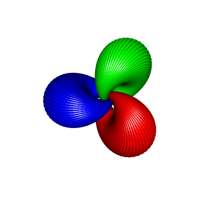
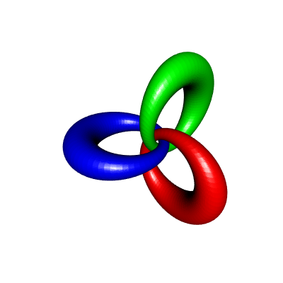

Linked cyclides
In this post, I will show how to construct some linked cyclides and draw them in R with rgl. The construction is based on the Hopf fibration. To draw a cyclide, the method is the following one: for a given \(\phi \in [-\pi/2, \pi/2)\) and for every \(\theta \in [0, 2\pi)\),
take the Hopf fiber corresponding to the point on the two-dimensional sphere \(S^2\) with spherical coordinates \((\theta, \phi)\), which is a great circle of the three-dimensional sphere \(S^3\);
rotate it in the four-dimensional space;
apply the stereographic projection to the rotated fiber.
This gives a circle in the three-dimensional space, and the union of the circles over \(\theta \in [0, 2\pi)\) forms a cyclide.
Now, if you repeat the construction with another rotation, the two cyclides you get are linked (see the pictures below).
To draw a circle with rgl, we will actually draw the torus whose equator is this circle, with a small minor radius. To do so, we will use the functions createTorusMesh and transfoMatrix that I introduced in a previous post. The code is also available in this gist.
Now, here is the promised code.
# load the functions createTorusMesh and transfoMatrix
source("TorusPassingByThreePoints.R")
# "inverse" Hopf map
hopfinverse <- function(q, t){
1/sqrt(2*(1+q[3])) * c(q[1]*cos(t)+q[2]*sin(t),
sin(t)*(1+q[3]),
cos(t)*(1+q[3]),
q[1]*sin(t)-q[2]*cos(t))
}
# stereographic projection
stereog <- function(x){
c(x[1], x[2], x[3])/(1-x[4])
}
# rotation in 4D space (right-isoclinic)
rotate4d <- function(alpha, beta, xi, vec){
a = cos(xi)
b = sin(alpha)*cos(beta)*sin(xi)
c = sin(alpha)*sin(beta)*sin(xi)
d = cos(alpha)*sin(xi)
p = vec[1]; q = vec[2]; r = vec[3]; s = vec[4]
c(a*p - b*q - c*r - d*s,
a*q + b*p + c*s - d*r,
a*r - b*s + c*p + d*q,
a*s + b*r - c*q + d*p)
}
nCirclesByCyclide <- 100
theta_ <- seq(0, 2*pi, len=nCirclesByCyclide+1)[-1]
nCyclides <- 3
beta0_ <- seq(0,2*pi,length.out=nCyclides+1)[-1]
colors <- rainbow(nCyclides)
phi <- 1 # -pi/2 < phi < pi/2; close to pi/2 <=> big hole
library(rgl)
open3d(windowRect=c(50,50,450,450))
view3d(90,0)
for(i in 1:nCyclides){
beta0 <- beta0_[i]
for(theta in theta_){
# take 3 points on the Hopf fiber of the point with
# spherical coordinates (theta,phi), and rotate them
circle4d3pts <- sapply(c(0,2,4), function(t){
rotate4d(pi/2, beta0, 1,
hopfinverse(c(cos(theta)*cos(phi),
sin(theta)*cos(phi),
sin(phi)), t))
})
# apply the stereographic projection
# this gives 3 points on a circle in the 3D space
circle3d3pts <- apply(circle4d3pts, 2, stereog)
# draw the torus passing by these three points
mr <- transfoMatrix(circle3d3pts[,1], circle3d3pts[,2], circle3d3pts[,3])
tmesh <- transform3d(createTorusMesh(R=mr$radius, r=0.2), mr$matrix)
shade3d(tmesh, color=colors[i])
}
}This code generates the following picture:

If you increase \(\phi\), this gives cyclides with a biggest hole, with a shape closer to the one of an ordinary torus. For example, here is the result for \(\phi=1.4\):

I used the same technique to do these animations with POV-Ray: